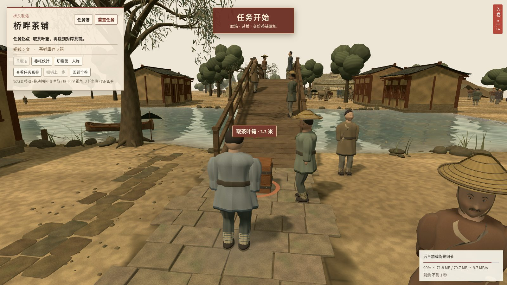
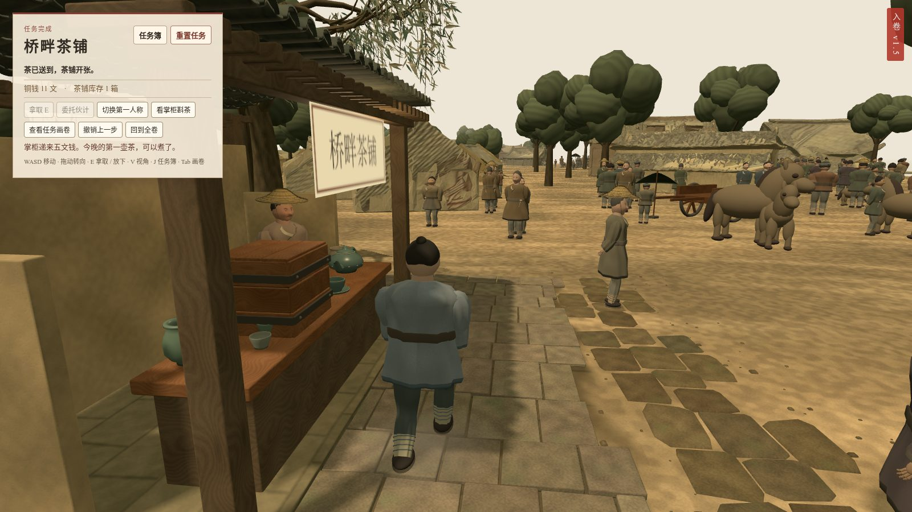
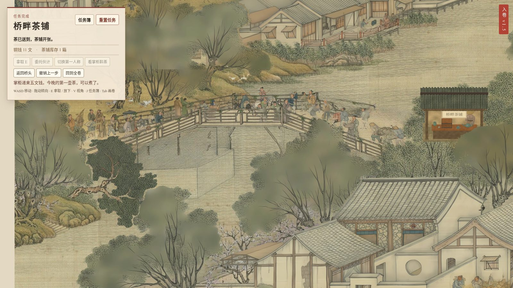

街景和任务画卷读取同一份世界状态。茶叶箱送到后，画卷里的箱子也在柜台上。



D1 = 2026-11-23。网页试玩按下面的顺序更新，每一项完成后会出现在上面的试玩链接里。
| 时间 | 玩法与人物 | 状态 |
|---|---|---|
| D1–2 | 两条送货路线、存档与撤销、任务画卷；水、柳、雨；关节手与任务簿；人物检视台 | 完成 |
| D3–5 | 四套居民的脸部差异；任务失败原因统一提示 | 进行中 |
| D6–7 | 第三条路线「对岸货栈」；掌柜递物与注视 | 待开始 |
| D8–14 | 三条路线共用账本；NPC 对话；衣褶细节与远近过渡 | 待开始 |
| D15–21 | 第二片区灰盒；更多市井任务；语音与口型 | 待开始 |
| D22–30 | 外部试玩与修改；性能复测 | 待开始 |